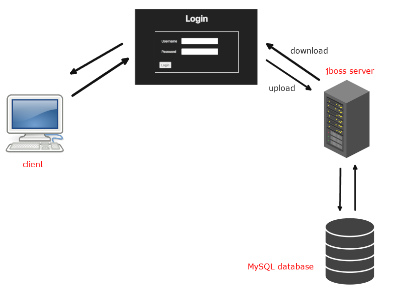
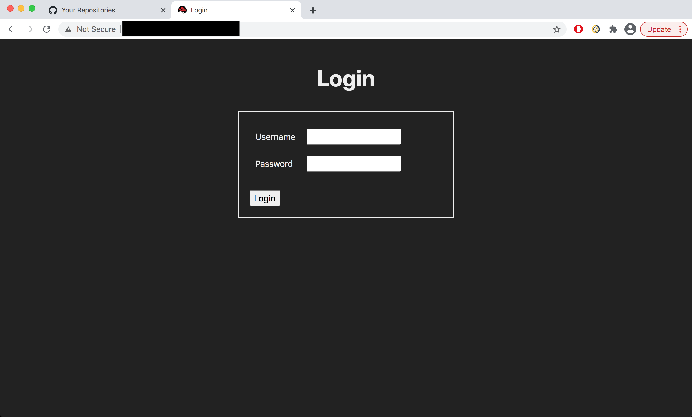
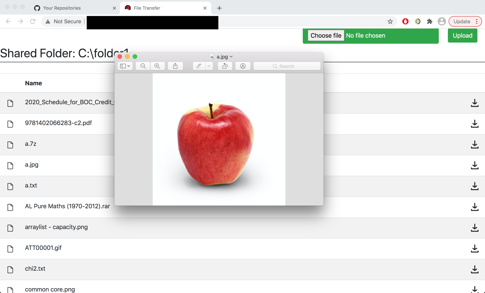
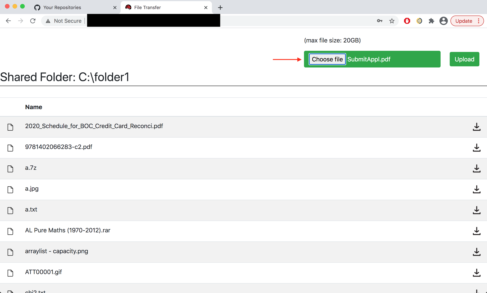
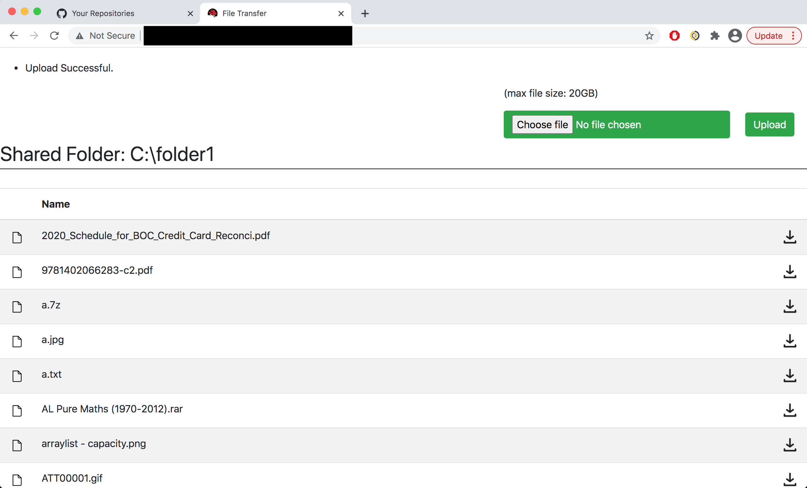
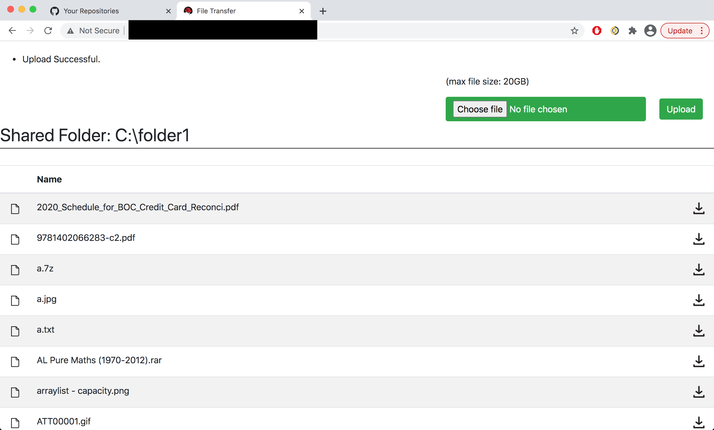

{{ page.title }}
Development Date: Jan 2021 - May 2021
Development Time: No record
Motivation
I create this project because I want to transfer a file from one computer to another. It seems an easy task nowadays because we can buy a USB hard drive to achieve my goal. However, in my job experience, I could not use my USB hard drive in my work computer because it did not trust my USB hard drive. Therefore, I had to upload my files to Google Drive.
However, sometimes my files were too large that I had to constantly free up my Google drive space. I cannot afford Google drive storage subscription so I decided to create an application to transfer my files easily and securely.
Technology
I have used a number of tools to develop my file transfer program:
| Technology | Usage |
|---|---|
| Java SE 8, Java EE 6 | Help create server-side web application to upload my files to my server or download my files from my server. |
| JBoss EAP 7.0 | My server. |
| MySQL | Store information about who can access my server. |
| Apache Ant | Build tool to pack my application JAR, WAR, EAR easily. |
| commons-io-2.5.jar | Help read or write file in binary form |
| commons-lang3-3.9.jar | Help get the entire exception trace. |
| log4j-api-2.12.1.jar, log4j-core-2.12.1.jar | Logging |
| mysql-connector-java-5.1.48.jar | Help access MySQL database in Java. |
Structure
Here is the general structure of my file transfer applcation:

-
Users have to login in order to access their personal server. The login password in database is not saved in raw form but hashed using SHA-512 algorithm.

-
If the login fails, it will ask users to login again.

-
After successful login, you will be forwarded to the GUI interface of the file transfer server. You can download files from the server or upload files to the server by using this application.

Features
1. Download file from server
-
Click the download icon next to the file name. ("a.jpg" for example.)

-
File "a.jpg" will be downloaded.

2. Upload files to server
-
Click "choose file". A browse dialog box will appear. Choose the file you want to upload to the server. Click "upload" button.

-
"Upload successful" message should appear after upload. The uploaded file should also appear in the file list.

3. Sort
Clicking the "Name" column will sort all files' name by alphabetical order in ascending order or descending order.
